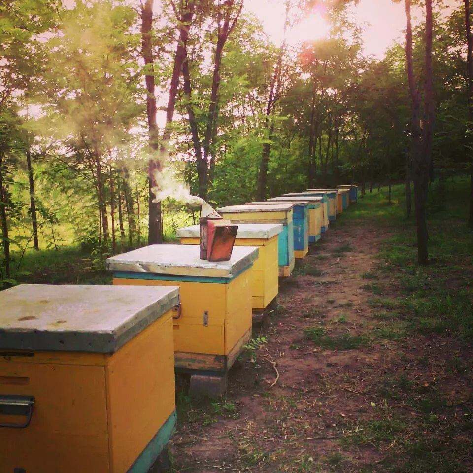

Я пасечник. Здесь я пишу о том, что происходит у моих ульев в Гуровке на Кировоградщине: какой мёд мы качаем, когда и почему он каждый год разный. Без рекламы и продаж — просто рассказ человека с пасекой.
